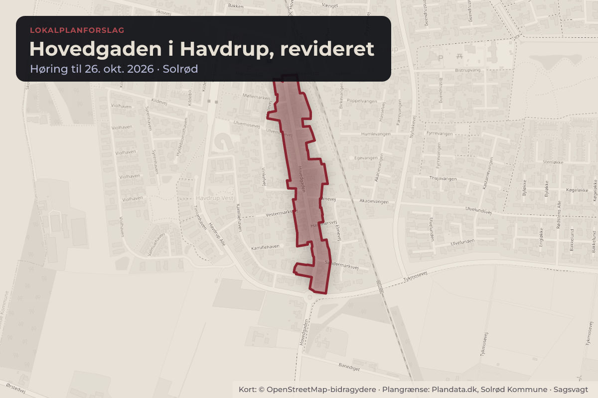
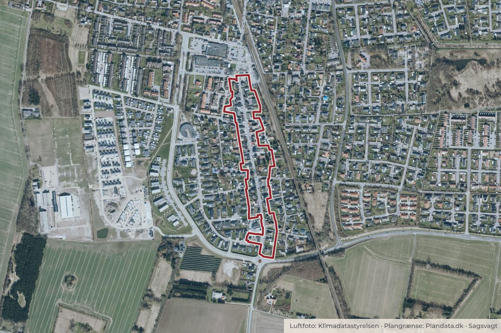

Besluttet 23. september, Natur-, trafik- og planudvalget, Solrød
Godkendelse af revideret lokalplanforslag for Hovedgaden i Havdrup

Kort: © OpenStreetMap-bidragydere. Plangrænse: Plandata.dk, Solrød Kommune.

Kort fortalt
- Hvem
- Natur-, trafik- og planudvalget, Solrød Kommune
- Hvornår
- Onsdag 23. september 2026
- Status
- Besluttet. Tiltrådt.
Er noget forkert her? Skriv til os
Læs hele sagen Kommunens egen tekst
Indstilling
Administrationen indstiller, at:
1. Forslag til revideret lokalplan 705.1 for Hovedgaden i Havdrup godkendes og sendes i fire
ugers offentlig høring.
2. Der ikke afholdes et nyt borgermøde i høringsperioden.
3. Afgørelsen om, at det reviderede lokalplanforslag ikke kræver miljøvurdering godkendes.
Sagsfremstilling
Natur-, trafik- og planudvalget skal tage stilling til et revideret forslag til lokalplan for Hovedgaden i
Havdrup og til den videre høringsproces. Udvalget har tilbage i 2025 godkendt et forslag til lokalplanen,
som efterfølgende blev sendt i offentlig høring. Da lokalplanen efter høringen blev forelagt til endelig
vedtagelse på Natur-, trafik- og planudvalgets møde den 10. juni 2026 besluttede udvalget, at "Sagen
oversendes til administrationen til fornyet behandling med henblik på tilretning af lokalplanforslaget.
Udvalget ønsker i delområde I at fastholde og styrke Hovedgaden som en funktionsblandet handels-,
service- og erhvervsgade, hvor stueetagerne som udgangspunkt anvendes til publikumsorienterede
erhverv og andre aktive byfunktioner. I særlige tilfælde ønsker udvalget, at der ud fra en konkret
vurdering kan gives mulighed for at dispensere til boligformål i stueetagerne, evt. i form af en
kompetencenorm" (se bilag 1).
Det reviderede lokalplanforslag følger Natur-, trafik- og planudvalgets beslutning fra juni 2026 om at
fastholde og styrke Hovedgaden i delområde I som en funktionsblandet handels-, service- og
erhvervsgade, hvor der kun i særlige tilfælde kan gives mulighed for dispensation til boligformål i
stueetager. Planforslaget er derfor ændret, så stueetagerne i delområde I skal anvendes til butikker,
publikumsorienterede erhverv og andre byfunktioner. Her vil boliger i stueetagen kun kunne tillades i
særlige tilfælde (med dispensation). Delområde I er den nordligste del af Hovedgaden tættest på
bymidten.
Lokalplanarbejdet blev igangsat i april 2025, og det første lokalplanforslag blev godkendt og sendt i
offentlig høring i april 2026.
Lokalplanens indhold
Lokalplanen skal understøtte en sammenhængende udvikling af Hovedgaden med plads til både boliger
og erhverv og samtidig forholde sig til områdets kulturmiljø. Planen giver derfor mulighed for mindre
butikker, caféer og serviceerhverv, som kan passe ind i Hovedgadens karakter. Samtidig beskriver
lokalplanen, hvordan omdannelse, nybyggeri, til- og ombygninger skal tilpasses Hovedgadens
arkitektoniske hovedtræk og områdets kulturmiljø. Lokalplanen åbner også op for, at Hovedgaden kan
trafiksaneres.
Ændringer og administrationens vurdering
Den væsentligste ændring i det reviderede planforslag er, at boliger i stueetagen i delområde I kun kan
tillades ved dispensation, hvis ændringen vurderes ikke at påvirke bymiljøet og tilknytningen til
Hovedgaden negativt eller ændrer væsentligt på det karakteristiske facadeudtryk. En dispensation vil
bero på en konkret vurdering i hvert enkelt tilfælde. Samtidig udgår muligheden for tæt-lav bebyggelse i
samme delområde, mens boliger på etager over stueplan fortsat er muligt.
Administrationen vurderer, at lokalplanen følger Natur-, trafik- og planudvalgets beslutning og samtidig
understøtter helhedsplanen for Havdrup By og hensynet til kulturmiljøet.
Derudover er der foretaget mindre konsekvensrettelser i planens øvrige bestemmelser og redegørelser.
Det reviderede lokalplanforslag er vedlagt som bilag 2.
Lokalplanen regulerer kun fremtidige forhold. Eksisterende lovlige forhold kan derfor fortsætte som hidtil.
Miljøvurdering
Afgørelsen om ikke at udarbejde en miljøvurdering blev offentliggjort sammen med det første
lokalplanforslag og blev ikke påklaget. Administrationen vurderer, at ændringerne i det reviderede
lokalplanforslag ikke ændrer grundlaget for afgørelsen. Afgørelsen offentliggøres derfor sammen med det
reviderede lokalplanforslag. Screeningen af planforslaget er vedlagt som bilag 3.
Det er ikke et lovkrav, at der udarbejdes en ny lokalplan for Hovedgaden i Havdrup. Det reviderede
lokalplanforslag skal sendes i offentlig høring efter planloven.
Høring og inddragelse
Det første lokalplanforslag var i offentlig høring fra den 16. april til den 15. maj 2026, hvor der også blev
afholdt borgermøde. Der indkom fem høringssvar, som blev behandlet af Natur-, trafik- og planudvalget i
juni 2026. Borgerne har desuden tidligere været inddraget gennem to åbne arrangementer og en
byvandring i oktober 2025.
På grund af ændringernes begrænsede omfang og den allerede omfattende borgerinddragelse anbefaler
administrationen en høringsperiode på fire uger uden et nyt borgermøde.
Finansiering
Sagen har ingen bevillingsmæssige konsekvenser.
Kompetence til afgørelse
Natur-, trafik- og planudvalget.
Beslutning
Tiltrådt.
Kilde: Solrød Kommune, Natur-, trafik- og planudvalget, referat fra mødet onsdag 23. september 2026, punkt 4. Læs den originale sag hos kommunen.